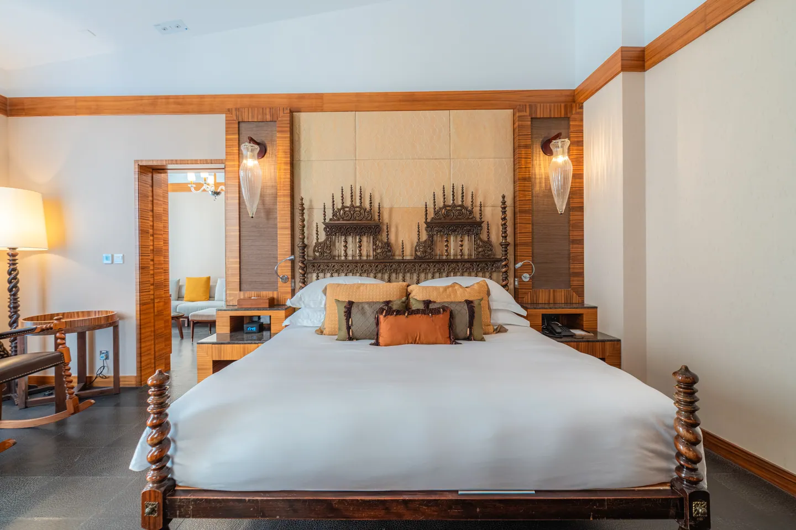
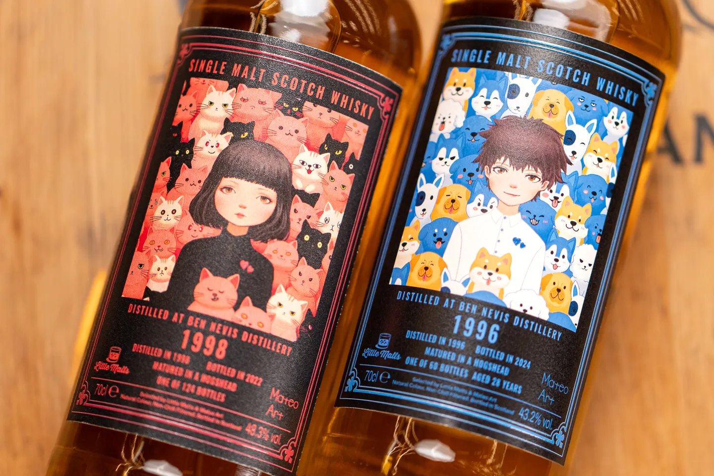
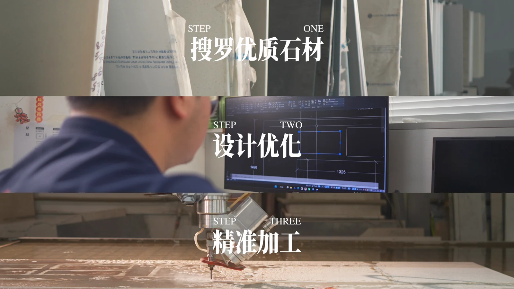
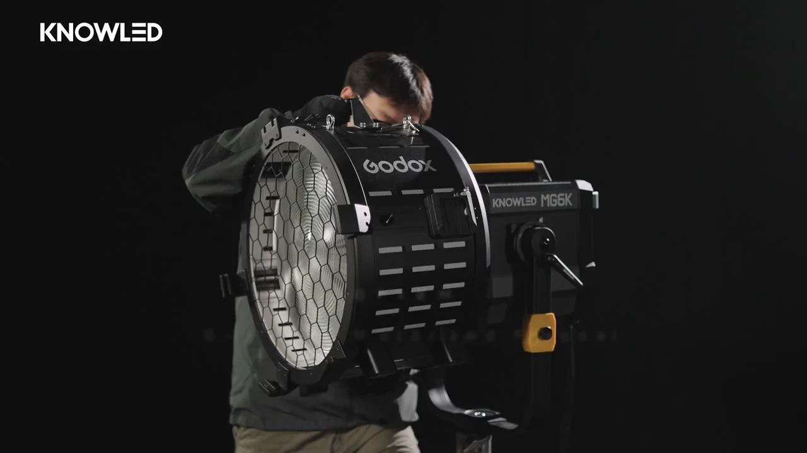
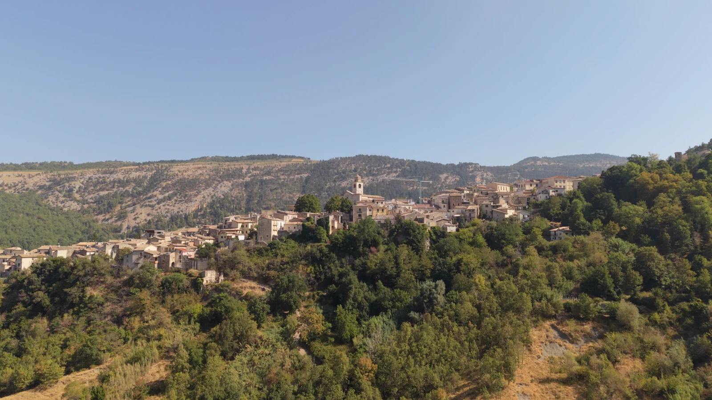

酒店、空间与楼盘摄影

拍摄酒店客房、套房、餐厅、门店和住宅，兼顾整体动线、空间尺度、材质与环境。
- 前期确认空间清单、使用渠道、重点角度及现场陈设。
- 交付整体、局部与细节画面，完成透视、色彩、曝光及常规环境修整。
- 按官网、OTA 预订平台及社媒要求提供高清图片和网页版本。
为品牌、酒店与机构提供内容策划、商业摄影和影片制作，按传播用途安排从前期到交付的每个环节。

拍摄酒店客房、套房、餐厅、门店和住宅，兼顾整体动线、空间尺度、材质与环境。

为独立站、网店和品牌传播制作商品图片，按实际结构与用途呈现外观、材质及功能。


记录会议、发布会、开业、晚宴、赛事、演出与红毯，按活动流程安排图片和影片拍摄。

活动中选片、处理并分批上传，方便来宾、主办方和媒体及时查看与使用。

通过访谈、工作现场与环境画面，呈现品牌背景、团队与服务。

结合商品理念、功能和使用步骤，制作实拍演示、装配介绍与社媒主题影片。

把空间动线、地区环境和现场体验组织成清晰的内容，方便观众了解地点及使用场景。

提供现有照片及影片素材的使用授权，适用于品牌传播、编辑出版和项目制作。
项目合作 · 澳门与大湾区
立足澳门与中山，服务粤港澳大湾区及跨境项目。欢迎来信或微信交流拍摄城市、预计档期与传播用途，我们通常于 24 小时内回复。
社媒内容策划与制作
月度内容合作
结合品牌定位、受众和上新安排，规划每月短片与图文，统筹沟通、拍摄及交付。
双平台图文与短片
同一主题按 Instagram、Facebook 与小红书的阅读方式制作版本，结合短片、照片轮播和双语文案。
现有素材再创作与复盘
整理已有图片与影片，把可用素材发展成有主题的系列，并结合客户提供的数据持续调整。
国际创作者合作拍摄
为来澳创作者及品牌拍摄酒店体验、城市行程、人物和活动内容，支持全程英语沟通。